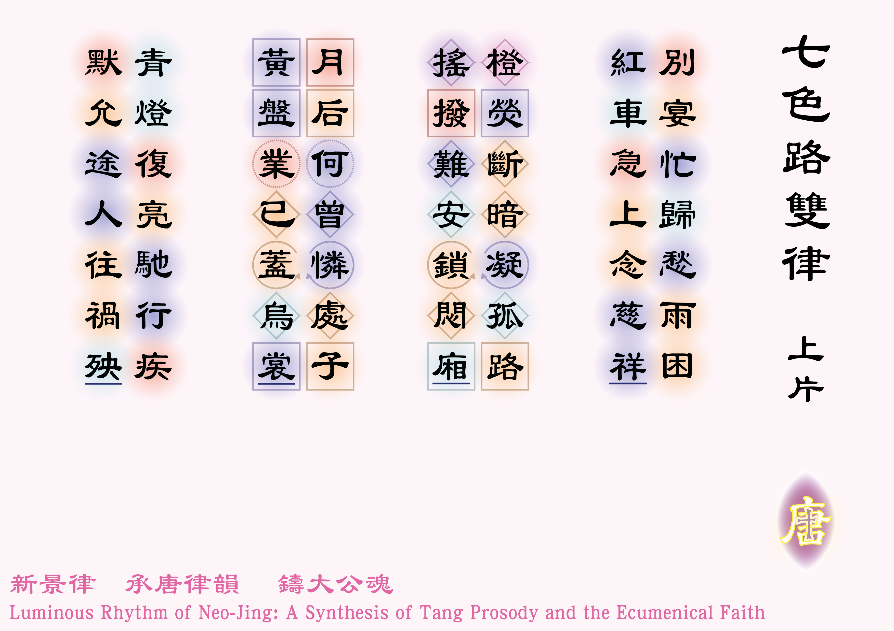
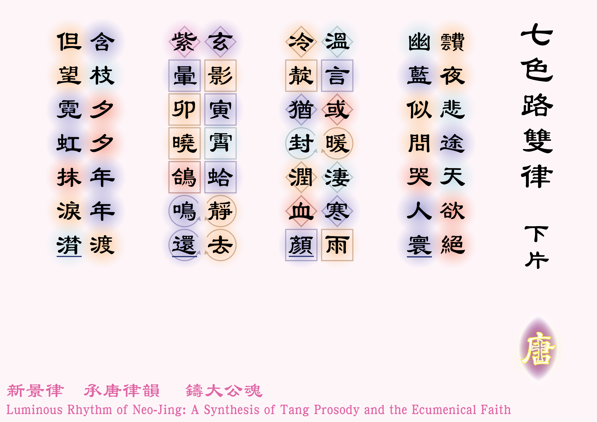

![[如果未顯示圖片，請確認 圖例_2-01.jpg 已放入同資料夾]](圖例_2-01.png)


別宴忙歸愁雨困，紅車急上念慈祥[1]慈祥：母親。。
橙熒斷暗凝孤路，搖撥難安鎖悶廂[2]橙熒：比喻街燈。。
月后何曾憐處子[3]月獵：希臘神話裡月亮女神阿提米斯 (Artemis)，她是狩獵之神，亦是兒童和女性的守護之神。？黃盤業已蓋烏裳！[4]黃盤：指月亮，案發當晚為農曆五月十二，若無雲雨，應見凸月漸盈。
青燈復亮馳行疾[5]青燈：交通燈。，默允途人往禍殃。
靅夜悲途天欲絕[6]靅：粵音費，昏暗的意思。，幽藍似問哭人寰！
溫言或暖淒寒雨，冷靛猶封潤血顏！
玄影寅霄蛤靜去[7]玄：黑色。
寅：粵音仁，深夜3時至5時。
霄：天空。
蛤：粵音霞，蟾蜍。
，紫暈卯曉鴿鳴還[8]紫暈：天亮時雲間紫色的光暈。
卯：粵音牡，清晨5時至7時。。
含枝夕夕年年渡[9]含枝：諾厄和家人渡過暴雨後，從方舟放出鴿子，及後鴿子含着橄欖枝回來時，表示水已退。見〈創世紀8:11〉，但望霓虹抹淚潸[10]潸：粵音山，流淚的樣子。！
體裁：七言律詩（上下片各一、仄起首句不入韻）
韻部：平水韻．七陽、十五刪
創作日期：二零二六年八月二十一日
| Poetic Verse (Rhymed & Metrical) | Close Literal Translation | |
|---|---|---|
| 1 | Safe from the feast, she rushed through rain so blind, Into the red cab, keeping mother in mind. |
Leaving the banquet in haste, distressed by the trapping rain, She quickly boarded the red car, thinking of her mother's care. |
| 2 | As orange streetlamps flashed on lone roads bleak, The wipers swung within a cage so meek. |
The orange glimmer of streetlamps pierced the dark, solitary road, The wipers swung uneasily, locking her inside the suffocating cabin. |
| 3 | Did Artemis e'er shield a maiden’s head? A yellow disc of moon is o'er-clouded with dread! |
Did Artemis e'er shield a maiden’s head? A yellow disc of moon is o'er-clouded with dread! |
| 4 | The green light turns; the killer speeds ahead, Passers-by walk, oblivious where they’re led! |
The green light shines again as the vehicle speeds away, Silently letting the passers-by walk toward their own doom! |
| 5 | The blue sky asked why mortals weep and die, Through a path of sorrow, neath a hopeless sky. |
On this sorrowful path in the torrential night, heaven itself seemed despairing, The blue abyss seemed to ask why humanity must weep! |
| 6 | Her gentle words might warm the bitter sleet, Yet cold, pale indigo seals her flushed face, sweet. |
Her gentle words might have warmed the chilling rain, Yet the cold indigo [of deathly complexion] seals her once blood-flushed, radiant face! |
| 7 | At dawn, the toadlike shadow takes its flight, A violet dawn brings back the dove of light. |
In the third watch of the night, the toadlike monster silently retreated, By the fourth watch, a violet dawn broke as the doves returned cooing. |
| 8 | The dove, with branch, flies on through year and year, Hoping the rainbow wipes away each tear. |
Bearing a branch, crossing the tides of time evening after evening, year after year, Longing only for the rainbow to wipe away her falling tears. |
On a rainy summer night in the 1980s, a seventeen-year-old girl, rushing home after a graduation dinner because she worried her family would be anxious, stepped into a taxi. Through a cruel twist of fate, the driver of that taxi was a serial killer…
Countless movies and television series have been produced about this case, making the killer a permanent fixture in this city’s collective memory. Through these media adaptations, we seem to have become intimately familiar with the killer’s psychology and criminal methods. Yet, what I hope we can remember instead is one of his victims—that very young girl. She was a devout believer. Even when she was locked away by the killer, she still spent hours sincerely talking to him about life and faith. She was a witness—one who bore witness to faith and goodness even in the face of absolute sin and death.
What exactly they said to each other that night is known only to God and the killer. And yet, while we have remembered the murderer, why does it feel as though she has been left absent from our memories?
In the Book of Genesis, we read of the catastrophic deluge that destroyed the world and God’s promise of the rainbow to Noah. We do not know what promise God made to that young girl after the torrential downpour of that fateful night. But can we make a promise to her? Can we promise that in every heavy rainstorm, we will never forget her, and beneath every rainbow, we will feel alongside her soul the radiant brightness of the cleared skies after the storm?
(There were three other victims in this tragedy whom I could not write individual poems for. I can only offer these words for this young girl as a small fragment of our collective memory. If you, the reader, know of the other victims, or if there are victims of other tragedies around you, I hope you will remember them in your own way—whether through a poem, an article, a prayer, or an action. Memory should not be the responsibility of the poet alone.)
***English version is translated by Google AI.